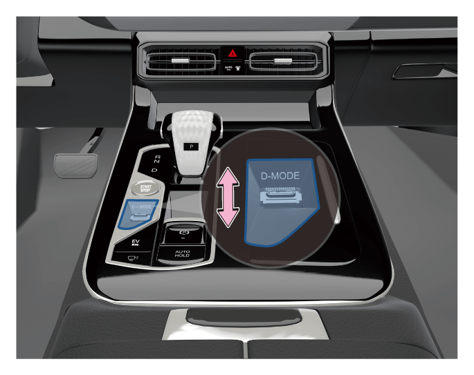
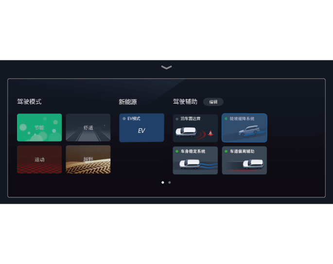

通过操作驾驶模式切换按钮即可打开越野模式。
越野模式*
越野模式旨在提高不平路面行驶时的越野驾驶性能。
越野模式下，系统不仅可以自动对驱动力进行最优化分配，还可以大幅抑制车轮打滑，提高车辆越野性能。
启用越野模式


点击底部工具栏驾控面板按软 按键进入驾控面板，点击“越野”软按键即可打开越野模式。
按键进入驾控面板，点击“越野”软按键即可打开越野模式。
组合仪表显示屏上将同步显示越野模式。
再次操作驾驶模式切换按钮或再次点击驾控面板的“越野”软按键即可关闭越野模式。
提示
+
越野模式工作时可能出现下列某一情况，这些情况并不表示有故障发生：
–当车轮空转时，ESP指示灯将会闪烁，以指示越野模式正在控制车轮空转。
–通过车身或方向盘可能感受到振动。
–可能会听到前机舱盖中发出声音。
警告
+
启用越野模式前，请务必知晓并遵守下列注意事项，否则可能引发意外事故：
–在不平道路上行驶时可使用越野模式。
–越野模式并非用于扩展车辆的极限，根据路况（倾斜度、道路附着系数和起伏情况），越野模式可能不够有效。驾驶时请彻底检查路况，并谨慎驾驶。
–在越野模式下行驶时，其燃油经济性将比非越野模式下高。
–请勿长时间连续使用越野模式。根据驾驶条件，相关零件的负载会增加，并且系统可能无法正常工作。此时，ESP OFF指示灯将点亮，但车辆可以正常行驶。短时间后，ESP OFF指示灯将熄灭，并且系统将正常工作。
— 页面到底了 —